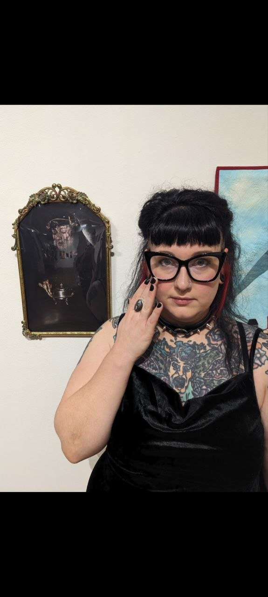
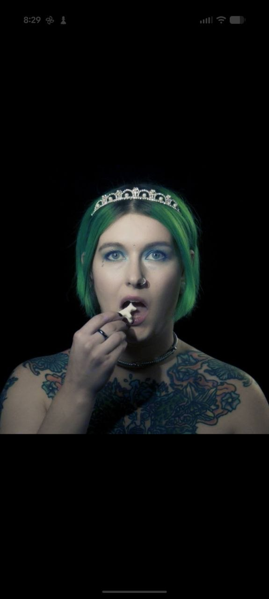
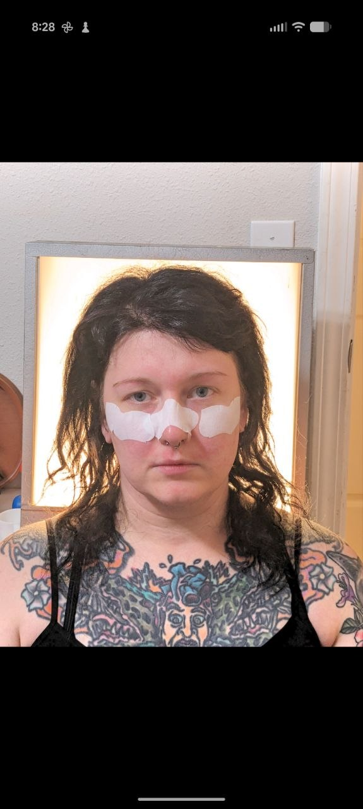

Carrie Juenger
Carrie Juenger is a multidisciplinary conceptual artist working out of Southern Illinois. Her work embodies loneliness, loss, death, trauma, sex, and the body.
This page holds the longer version, so the home page can stay lighter and the work can breathe.



Biography
Carrie Juenger is a multidisciplinary conceptual artist working out of Southern Illinois. Her work embodies loneliness, loss, death, trauma, sex, and the body.
Her photography is both deeply personal and emotionally charged. She uses the form to communicate complex concepts and feelings, with work that draws on themes such as how one feels in their skin, the death of a loved one, partnership, and psychic wounds.
Her video work uses animal symbolism and voiceover from original writing to convey trauma, specifically loss of virginity, childhood divorce, and marital turmoil. These short films were featured in regional film festivals, and Crabs in a Dollhouse exhibited in Belarus, Eastern Europe.
She exercises her skill in collage by making flyers for events and work for local zines. She ran five issues of an art and poetry zine titled City Litter, which was distributed through mail and at The Small Press Expo in St. Louis. She is currently working on a new zine titled Fruits of Lunacy.
For the homepage, this biography is condensed into a shorter statement. This page keeps the full version visible and easy to update.
Selected portrait images are shown here as a simple introduction to the work and presence behind it.